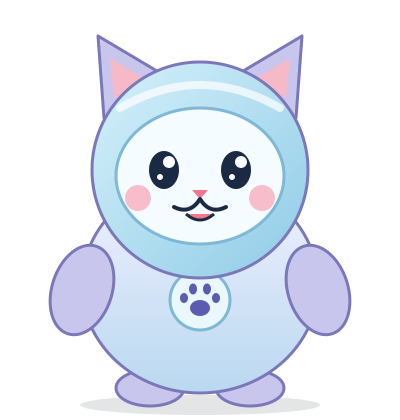

Mis solicitudes
El estado de tus solicitudes de adopción. Cuando un refugio te aprueba, aquí encuentras la guía para cuidar a tu nueva mascota.

Aún no has enviado solicitudes
Busca una mascota en «Refugios» y toca «Solicitar adopción».
Ver refugios